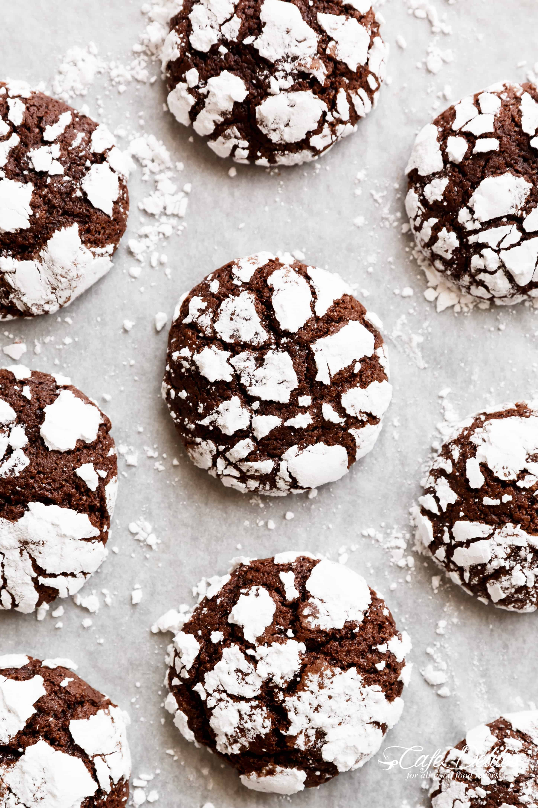

Fudgy Chocolate Crinkle Cookies

Description
These fudgy chocolate crinkle cookies have a soft brownie textured centre, with a crunch of cookie on the outside.
Rich, decadent,chocolate-y and delicious. The ultimate chocolate cookies.
Ingredients:
- 1/2 cup (2.2 oz/60 g) unsweetened cocoa powder
- 1 cup (7 oz/205 g) white granulated sugar
- 1/4 cup (60ml) vegetable oil
- 2 large eggs
- 2 tsp pure vanilla extract
- 1 cup (3.5oz/130g) all purpose or plain flour
- 1 tsp baking powder
- 1/2 tsp salt
- 1/4 cup confectioner's sugar or icing sugar (for coating)